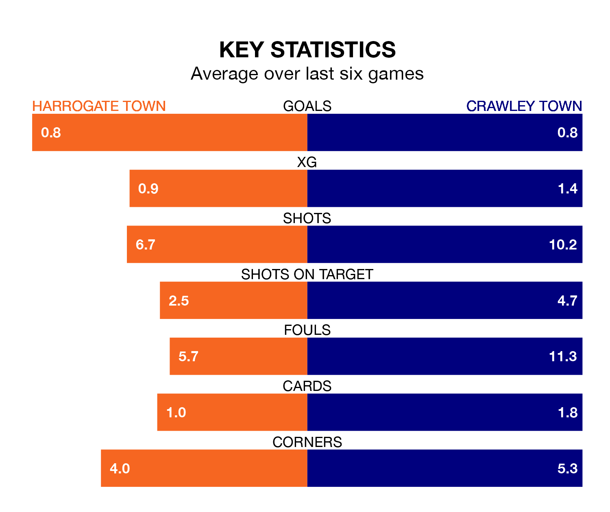

Harrogate Town face Crawley Town at the EnviroVent Stadium on Saturday looking to secure a first win in six EFL League Two games.
Harrogate have lost three and drawn two matches since they last earned three points – against Colchester United on February 10.
They face a Crawley side who have won three and drawn one over that time.
In the last 10 years, Harrogate and Crawley have played each other on seven occasions. Harrogate won one of them, Crawley three, and they drew three times.
On average, Harrogate scored 1.3 goals and the Red Devils 1.7 in those matches.
Their last meeting was on November 25, when Crawley won 2-1 at home.
With 42 goals in 35 games so far this season, Harrogate are scoring at below the league average rate with 1.2 goals per game. And they are conceding at an average rate, letting in 53 goals at a rate of 1.5 per game.
Crawley are also below average scorers, with 1.4 goals per game, compared to a league average of 1.5. They have conceded 1.5 goals per game.
Harrogate Town's Matty Daly is among the league's most creative players, racking up nine assists in 29 appearances so far this season, and holding second spot in EFL League Two's assist charts.
For Crawley Town, Liam Kelly has set up the most goals, having laid on seven assists in 29 games.
The Red Devils are 11th in the table after 34 games, of which they have won 15 and drawn four, earning 49 points.
The home side are two places behind the visitors in 13th, with 14 wins and seven draws putting them on the same number of points.
Harrogate's last match was on March 2, a 1-1 draw against Swindon Town, with Anthony O'Connor getting the goal for Harrogate.
Crawley lost 1-0 against Morecambe last time out, on Tuesday.
Saturday's match will be refereed by Darren Drysdale, who has taken charge of 11 EFL League Two games so far this season, issuing one red card and booking 44 players. He has awarded five penalties.
He is yet to oversee a match featuring either Harrogate or Crawley this season.
Updated: 09:34 (UTC), 08/03/24